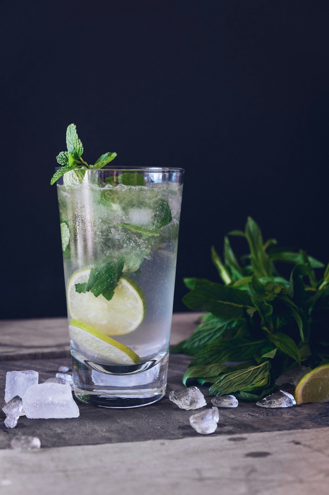

Research overview
Across the Chinese internet, phrases such as “real-leaf fresh brewing,” “low sugar,” “real tea base,” “short ingredient list,” and “fewer additives” now circulate as near-synonyms for a better drink choice. They matter—but only as clues. None of them, by itself, can prove that a drink is genuinely healthier in the nutritional or long-term lifestyle sense. This page rebuilds those signals inside a more research-oriented framework.
Modern tea brands are very good at manufacturing a feeling of improvement. The moment a menu shows “fresh brewed from tea leaves,” “30 percent sugar,” “light milk,” or “simpler ingredients,” many consumers intuitively translate those labels into a moral conclusion: this should be more reasonable than an older-style heavy milk tea or a highly sweetened dessert drink. That intuition is not entirely wrong. The problem is that it often notices only one layer of the drink and ignores the rest—total sugar, serving size, milk base, toppings, drinking frequency, and what the drink is actually replacing.
That is why the most useful question today is not whether these phrases are real or fake. It is how much they can legitimately tell us, where they are genuinely helpful, and where they become a shortcut for overconfidence. A stronger framework has to separate health signals from health conclusions.
Topic: the gap between “health signals” in modern tea drinks and their real health meaning Key issues: low sugar, real-leaf brewing, ingredient-list length, milk base, beverage substitution, total sugar load, repeat frequency Best for: readers who buy fresh tea drinks often and want a more rigorous way to judge “lighter-burden” claims Core reminder: a good signal can improve the odds that a drink is more reasonable, but it cannot replace judgment about total load, product structure, and habit frequency.
Because consumers no longer evaluate tea drinks only as treats. Once a category becomes frequent—something people may buy several times a week—it also becomes a habit question. At that point, people want to know what they are repeatedly putting into their bodies, and whether one drink can genuinely be defended as lighter or more reasonable than another.
Several pressures now overlap. Social media has trained people to talk about sugar, calories, additive load, ingredient lists, and “lighter burden.” The tea-drink industry has matured, so brands need stronger reasons for repeat purchase. And tea itself carries a symbolic advantage: it already sounds more restrained and plant-based than many visibly sugary beverages. Put “tea” together with “low sugar,” “real leaves,” or “simpler formula,” and consumers are highly ready to believe they are making a better choice.
Many arguments go wrong immediately because “healthier” is left undefined. Does it mean lower sugar? Lower calorie load? More plant-derived ingredients? More research relevance because the drink is closer to actual tea? Better suitability for long-term routine? These are not the same thing.
Research usually supports narrower claims than marketing does. A drink may be relatively lower in sugar, closer to actual tea structure, easier to justify in a daily pattern, or useful when it replaces a worse option. That is very different from saying it is simply a “healthy drink.” The word that matters here is relative. Many modern tea drinks are not healthy in some absolute, halo-like sense. Some are merely more defensible than others.
The phrase matters because it signals that tea may actually sit at the center of the product. A drink built around real brewed tea can carry bitterness, astringency, aroma, aftertaste, and structural depth that reduce the need to rely entirely on sweetness or creamy heaviness. In that sense, it is closer to the kinds of tea formats that research often treats as meaningful.
But real-leaf brewing is still only a plus factor, not a full verdict. A drink can have a real tea base and still contain substantial syrup, heavy milk elements, cream topping, or large amounts of extras. “Fresh brewed” is a process description, not a nutritional outcome. It can increase credibility, but it cannot answer the whole question. It can also imply a more noticeable caffeine presence, which may be desirable for some drinkers and problematic for others.
Low sugar matters because sugar remains one of the clearest variables in beverage burden. If total sugar actually drops, that usually pushes the drink in a more defensible direction. This helps explain why low-sugar tea drinks remain so hot in Chinese online discussion: the phrase compresses a complicated nutrition topic into a simple, legible promise.
The overreading begins when “low sugar” becomes shorthand for “overall healthy.” A lower-sugar drink may still be large, heavily milk-based, sweetened in other ways, or frequent enough in routine to add substantial load over time. It may also encourage the consumer to relax vigilance and buy it more often. Research and public-health logic therefore ask a more precise question: did the drink actually reduce total sugar burden in a meaningful way, and did it help displace a clearly worse beverage pattern?

Usually yes, but again only as a probabilistic sign. A shorter, more understandable ingredient list often means the product is easier to interpret, less psychologically opaque, and more likely to feel trustworthy. In a high-frequency category such as tea drinks, that trust effect is powerful. People are more willing to build habits around products they feel they can explain to themselves.
Still, ingredient-list length is not the same thing as nutritional quality. Some short lists still produce substantial sugar load. Some technically longer structures may not be nutritionally worse in practice. And fresh-made tea drinks, unlike packaged foods, often present simplified ingredient language anyway. In real consumer life, a short ingredient list functions most strongly as a marker of credibility, not a final proof of healthfulness.
If we want to think more clearly than marketing does, the main object of judgment should be the drink’s full structure: how visible the tea base is, how much sugar it carries, how heavy the milk component is, whether toppings add hidden load, how large the serving is, and how often the drink gets repeated. A real-leaf, 30-percent-sugar, large-format creamy drink with toppings does not mean the same thing as a smaller tea-forward drink with reduced sugar and no extras.
This is why research-minded writing so often returns to a plain framework: total load, repeat frequency, and substitution value. The real question is whether the drink reduces burden compared with what a person would otherwise consume, or whether it simply turns a better-marketed indulgence into a more frequent habit.
Because it is cognitively cheap. A sense of health does not require the consumer to calculate sugar, understand milk bases, or reason carefully about frequency. It only requires a few surface cues: cleaner tea color, more restrained language, fresher brewing imagery, fewer scary-sounding ingredients, and a visual style that fits self-disciplined modern life. For social platforms, for brands, and for self-justification, that system is extremely efficient.
This does not make the feeling entirely fake. It often captures a real directional improvement: less sugar, more tea visibility, less overt industrial heaviness. But direction is not the same thing as conclusion. The common modern error is not blatant falsehood. It is over-inference: treating a limited improvement as if it were already enough.
First, is sugar truly lower? Not just in wording, but in actual total burden.
Second, is tea genuinely central? Without a real tea base, “real tea” language may still be mostly decorative.
Third, is the drink still heavy overall? Milk base, cream topping, large size, and add-ins can undo much of the benefit.
Fourth, what is it replacing? A drink has clearer public-health value if it displaces something more sugar-heavy or dessert-like.
Fifth, will it make you drink more often? Some “lighter” products are powerful precisely because they feel safe enough to normalize frequent purchase.
A practical order helps. First check whether the drink really lowers sugar. Then ask whether the tea base feels real and central. Then ask whether milk, toppings, or oversized portions quietly rebuild the burden. Only after that should ingredient transparency function as a supporting sign. In other words, start with the variables that matter most physically, and then use credibility cues as secondary support.
The goal is not to become a joyless beverage auditor. It is to make a few high-value decisions well: choose less sugar when possible; prefer tea-forward, lower-add-in formats for repeat drinking; do not let “real-leaf brewing” or “fewer additives” trick you into assuming a drink is suitable for unlimited routine; and remember that if what you really want is tea itself, simpler tea formats still align more cleanly with research logic than dressed-up drinks do.
If this page had to be reduced to one line, it would be this: real-leaf brewing, low sugar, and shorter ingredient lists are all worth positive weight, but none of them can decide on their own that a drink is healthier. Their real value lies in helping readers filter out products that are obviously heavier, more opaque, and more dependent on pure image-making. They cannot replace judgment about total sugar, total size, milk load, toppings, or drinking frequency.
Research rarely gives perfectly satisfying consumer answers because real dietary life is not simple. But that is also why a slower, more structural reading is more useful. You do not need to believe every brand story, and you do not need to become cynical about every “lighter-burden” claim either. You only need to remember that the most trustworthy sign is not one attractive phrase, but whether the drink as a whole is genuinely simpler, lower in sugar, more tea-centered, and actually helps replace worse everyday choices.
Continue with Tea and metabolic health, Tea polyphenols, catechins, and the gut microbiome, Why ingredient-list transparency is becoming a tea-drink obsession, and Why low-sugar tea drinks are booming.
Source references: WHO: Healthy diet, CDC: Added sugars, Tieguanyin.